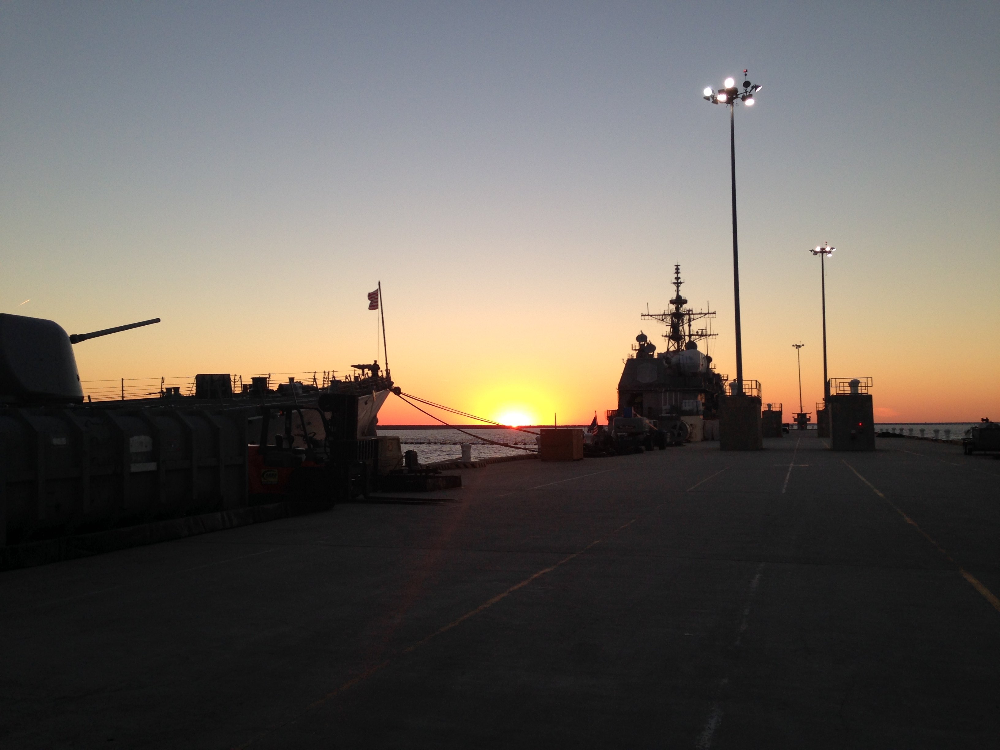
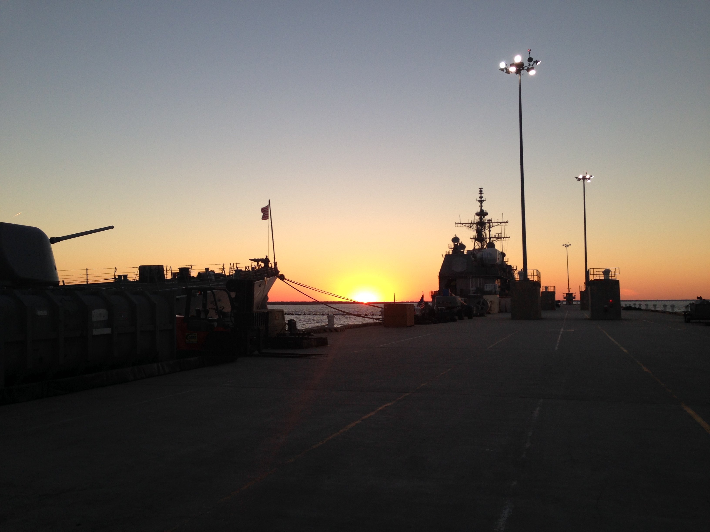

About Me
Hello! I'm Collin D. Cortez, I like to make things. This website is my foray into webdesign and development. With a background in electronics and automation, I wanted a place to share my projects and ideas.
A little more about me
I was born in Lake Charles the youngest of 3 kids. I spent most of my time outside getting into trouble and playing sport. My father was an industrial electrician and would bring home tools and parts and ask me what they did, or what they were for. I think that's where my curiousity and overconfidence of doing something comes from. We always had computers in the house and I remember AOL CDs and upgrading sound cards on our computer to play better games. The Secret of Monkey Island(I lost the decoder wheel immediately) and Commander Keen were some of my favorite.


High School flew by and a few unsuccessful attempts at college and relocations later I found myself in Atlanta, GA living with my brother. A few aimless years of this I decided to join the Navy, I figured if nothing else I would gain some experience, skills, and hopefully direction. And man did I. I was an Electronics Technician working on Navigational Radar and communications equipment. During my 6 years in the Navy I lived in 3 states, visited 10 countries, went on 2 deployments, got married, bought our first house, and had our first child. That's a lot of living in 6 years.


 



After leaving the Navy I decided to give college another try. With a lot more maturity, experience, and motivation I finished my undergrad in 2 years leaving the University of Louisiana at Lafayette with a Bachelors in Industrial Technology in 2020. I immediately enrolled in a graduate program at Louisiana Tech University in Engineering Management. While attending LA Tech I was working in the field in Louisiana, Texas, and Offshore as an Instruementation and Electrical Technician specializing in automation and commisioning. Upon the birth of our second child I decided it was time to work closer to home. I began working as an Engineer in 2022 and graduated from LA Tech in 2023. Currently I am a Senior Manufacturing Engineer at a production facility and love what I do.


During all of this I got into competitive weightlifting and competed in Powerlifting, Strongman, and Highland Games. Eventually I began hosting my own compeitions, unfortunately a back injury forced me to hang up my weight belt and smelling salts. But man do I have alot of fun.


This is very much a work in progress and to be honest Claude is writing most of the code, I'm still learning. I hope to post some projects and blogs soon.
When I'm not working on projects or writing code, I try to get outside and enjoy nature. I believe in constant growth and change and consider myself a permanent student.
Feel free to explore my projects and blog posts to get a better sense of my work and thought process. If you'd like to collaborate or just chat about web development, don't hesitate to reach out!
View My Resume